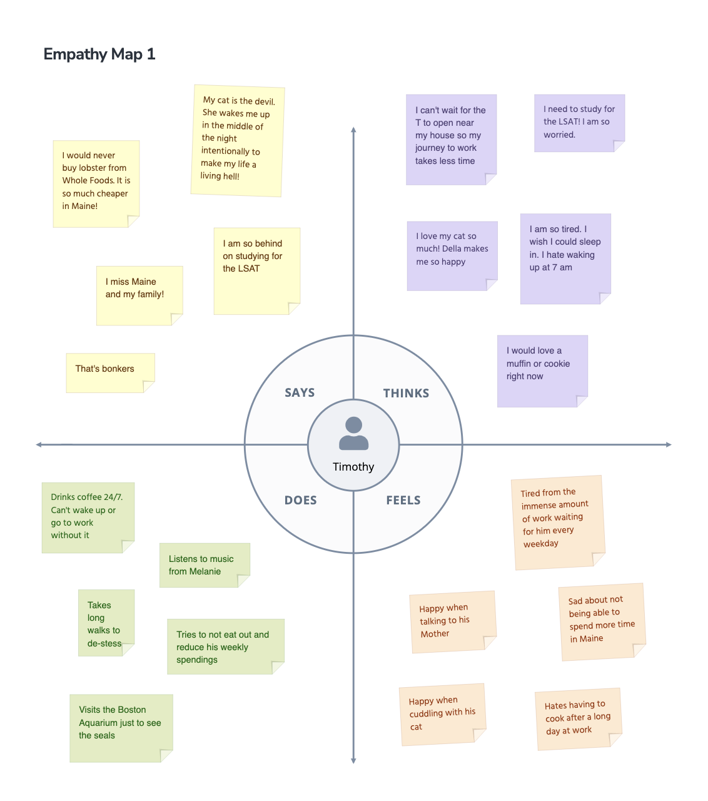
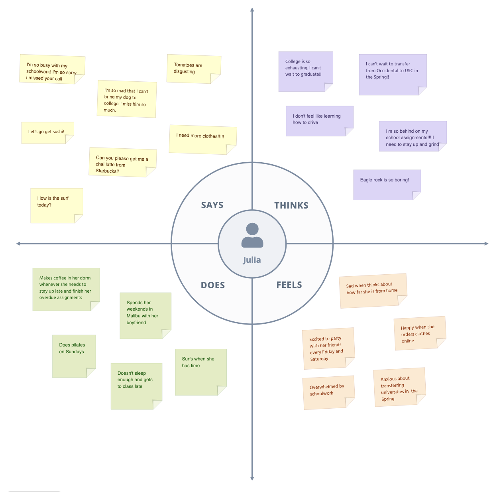
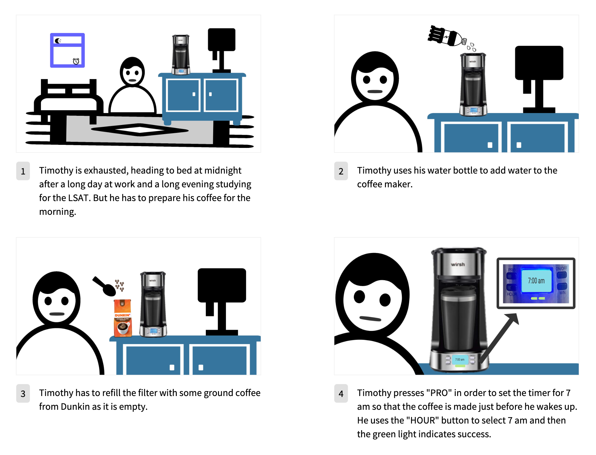
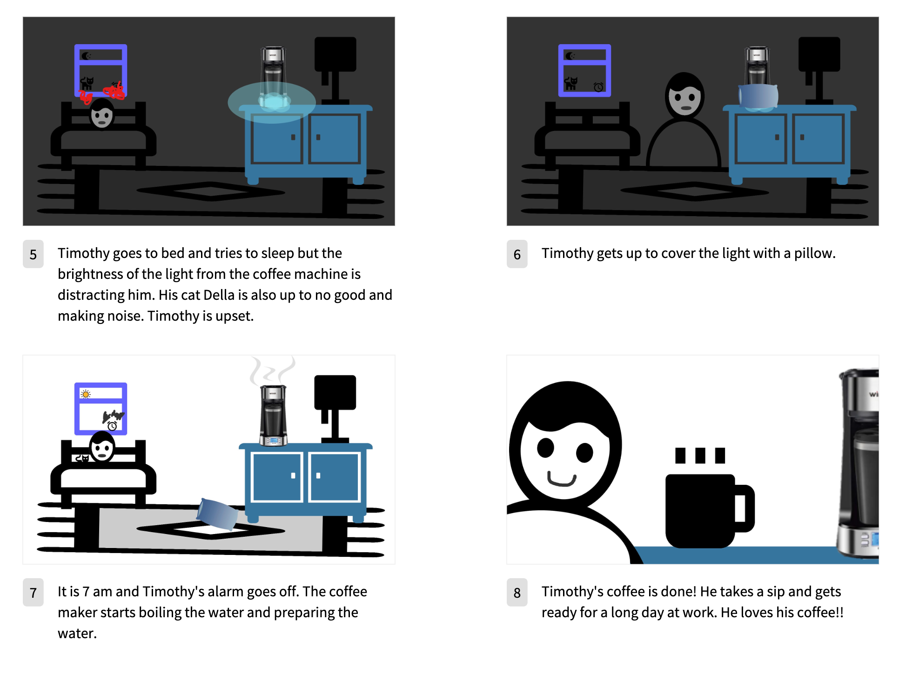

part I: preparation.
The automatic coffee maker drips boiled water through finely ground coffee in a paper filter. For those unfamiliar with automatic drip coffee makers, lets outline the steps involved in using them:
- Pour a measured amount of cold water into the reservoir so that it can be boiled.
- Add ground coffee to the filter so that it can be infused with the water.
- Set the timer so that the coffee can be pre-filled at night to make coffee at dawn.
sketch of interface.
Interface Objective: Allows the user to turn on the coffee machine and make coffee instantly. Also allows the user to set the time at which they want their coffee prepared.
- ON/OFF: Starts the coffee-making process if pressed.
- PRO: Allows the user to choose a time at which they would like their coffee to be prepared.
- HOUR: Allows user to specify the hours when specifying when they would like their coffee prepared.
- MIN: Allows user to specify the minutes when specifying when they would like their coffee prepared.
- Screen: The screen displays the current time and is used when the user enters "PRO" mode and chooses a time for their coffee to be made.
Sketch of the Coffee Maker and its Interface.
part II: recording observations.
key observations
- Many people who have coffee machines use them to get a coffee fix whenever they are stressed from their work no matter where they are
- Many people have them to save money
- Many people use the automatic coffee machines to be able to easily prepare coffee for the morning (when they will need to rush to work and will not have time to fix their coffee)
user research questions
- How often do you use your coffee maker?
- How long does it take on average to make your coffee?
- How long do you have to wait for the coffee to cool down? Is your coffee too cold or hot?
- Does your coffee maker make loud noises or produce distracting flashing lights?
- Do you ever spill coffee while using your coffee maker?
- What was your biggest motivation behind purchasing a coffee maker (as opposed to buying coffee from cafés)?
- From 1 to 10, how satisfied are you with your coffee maker?
- How easy is it to use the user interface to set the coffee maker to make coffee for the next day?
- How easy is it to use the user interface to set the coffee maker to make coffee for the moment?
- What settings do you usually use when making coffee?
- Does your coffee maker ever malfunction or need repairing?
summarized responses
- They typically use their coffee makers once day.
- They do not spend much time on preparing their coffee as it only takes about 2 minutes to pour water, add ground coffee and configure the settings to either make coffee for the moment or the morning.
- Coffee makers typically make noise when making coffee, but the noise only lasts for about 7 minutes. They can also have very bright lights that can be distracting at night.
- The two main reasons my interviewees listed for purchasing the coffee maker were convenience and saving money.
- Users are generally satisfied with the interface as it is simple and allows them to make coffee on the spot or plan for coffee at a time. They also appreciate that the time is displayed.
The coffee machine that two of three interviewees own: the Wirsh Coffee Maker
part III: personas.
User 1: Timothy
"Coffee-loving" Timothy is a Swarthmore graduate currently working at a court house in Boston as a Victim's Advocate.
- Timothy is representative of people who need coffee to wake up and function.
- His main problem with the interface entails his frustration with the brightness of the light from the screen, which can be distracting at night.
- Other than that, he finds the interface to be simple, easy to use and reliable (especially the 'PRO' mode)
User 2: Julia
"Nocturnal" Julia is a sophomore at Occidental who is transferring to USC in the Spring.
- Julia is representative of students who need coffee to stay up and complete their late assignments.
- Her main problem with the interface is that the labels of the buttons can be misleading at first glance.
- At first, she did not know that she had to use 'On/Off' to make coffee in the moment and 'PRO' to make coffee for later. She suggests that labels like 'Make Coffee Now" and "Make Coffee For Later" would have been clearer.
part IV: storyboard.
I have decided to go with Timothy for my storyboard.
